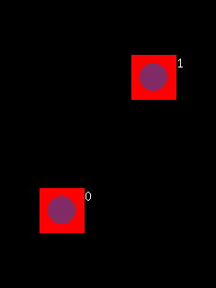

This simple application shows how to handle multitouch events so that your applications can react to pinches, swipes and rotatation. This application is based on the MoSync Moblet framework.

This example is included in the MoSync SDK installation in the /examples/Moblet folder. For information on importing the examples into your workspace, see Importing the Examples.
When the application runs, the screen is intially blank. Touch the screen in one, two, or more places. (If you are running the application in the MoRE emulator, right-click on the screen to start MoRE's multitouch emulation mode.) At each touch point a red rectangle will be displayed, along with the ID of the touch point.
(Note that only some touchscreen devices support multitouch, and that the maximum number of touch points a device can handle varies: iPhone = 5, iPad = 11, HTC Wildfire = 3, Samsung Galaxy S = 5, MoRE emulator = 2.)
Try lifting one or more fingers, and pinching, skewing, swiping - the rectangles will follow your touches. Touch IDs are reused when you lift a finger and then touch again.
Examine the source code of the application to learn how the program works. Note the use of MAUtil::Map to store the collection of touch IDs and their coordinates.